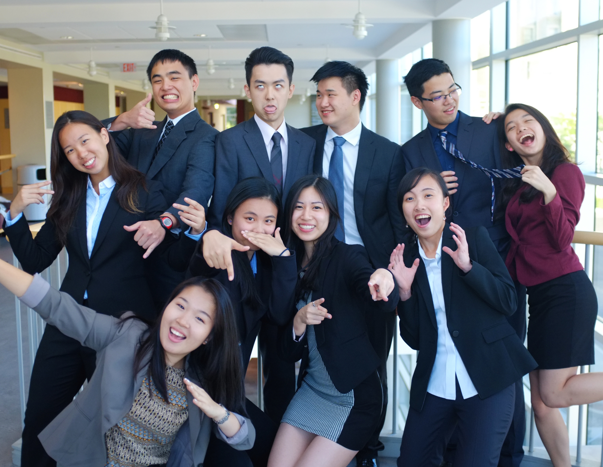

Cornell Club of Taiwan
Networking Platform and Professional Outreach


CCT serve as a platform where Taiwanese-related people from everywhere can help the younger generation seek out their professional paths. We provide all kinds of networking opportunities in all fields including fashion, medical, engineering, and business.

We work to build close connections between alumni, graduate students, and other Taiwanese and Taiwanese American organizations. We create a database of alumni all over the world with different professions who are willing to mentor undergraduate students.

Apart from our professional goals, we are a home away from home for all Taiwanese and Taiwanese American students. We are a close-knit family where you build long lasting relationships with the club members. CCT is where friends become families.


I'm a junior majoring in hotel administration and minoring in real estate. On campus, I work at The Statler Hotel, is the Assistant Director of Hotel Ezra Cornell's Rooms division, and is also a teaching assistant for various classes. This past summer, I've interned at the Corporate Development Office of Regent Hotels Group in Taipei. In my free time, I enjoy reading, sleeping, and cooking for friends.
I’m a student majoring in hotel administration and minoring in German and real estate at Cornell. Outside of CCT, I’m involved with Ascend, the Cornell Hedge Fund, and Global China Connection on campus. This past summer, I worked as an investment banking intern at Kerburn Rose as part of their mergers and acquisitions team. In my free time, I enjoy traveling, reading, and listening to music.
I’m a junior majoring in Environmental Science and Sustainability in CALS. I’m from Taiwan and has lived all my life until I came to Cornell for college. I’m interested in a career in sustainability, but I’m also open to other opportunities. When I’m not studying, I love to sing, tap dance, and listen to music.☺
Hi! I'm Dylan, and I'm a sophomore studying Computer Science in CAS. However, I'm still uncertain about my future profession...yikes. I was born and raised in Taipei, Taiwan and therefore grew up munching on my favorite food: rice and 小籠包. When I first came to Cornell, CCT provided me with my first family here, so I hope I can do the same for any incoming members!

I'm a senior majoring in biological sciences with a concentration in neurobiology and behavior. I am fascinated with animals! I'm currently studying the behavior of chameleons and squirrels at Cornell, and have two beloved toy poodles at home that I adore. I also love going to zoos and aquariums, and have housed turtles, lizards, mantises, birds, fish, and tadpoles, to name a few.
I’m a sophomore majoring in hotel administration and minoring in real estate as well as psychology. The past summer, I interned as an analyst at CITIC Securities’ Investment Banking Department in Beijing. As a director of professional development, I must say CCT provides a community in which its members are passionate with a broad range of disciplines and interests; CCT’s not only a platform helpful for individual growth, but a home away from home of earnest and real connections beyond campus life.

I'm a sophomore studying Human Biology, Health and Society in the College of Human Ecology, pursuing professional interests in healthcare and disease prevention. My fun fact is that I've never been on a roller coaster, but hopefully that'll change soon!
I’m a junior studying material science engineering with minors in architecture and mechanical engineering. I have several TA/AEW experiences on campus, and intern experiences in both architecture and engineering fields. In the future, I wish to become an architect with engineering design techniques. One fun fact about me is that I love cold weather and truly enjoy Ithaca winters!
I’m a sophomore studying comparative literature on the premed track. Basic translation of my future career: a doctor who loves reading and analyzing literature! Joining CCT was one of the best decisions I have made coming here and I am very proud of my half-Taiwanese, half-Shanghainese heritage. I look forward to serving as your Director of Internal Professional Development!

Hello there! My name is Helen and I am a sophomore in Applied Economics and Management. I am interested in combining environmental science and business issues together and applying them in an international setting. Outside of classes, you can generally find me in the pool, in the weight room, listening to cool music, or talking about how awesome Taiwan is, all while smelling like Chlorine.
New Student Welcoming Dinner is our first event of the year. This year, we invite the incoming freshmen, transfer students, and graduate students who are interested in our club to a dinner in Collegetown Plum Tree. The new students learn about lives in Cornell while chatting and socializing with current E-Board members. Through this event, we introduce Cornell Club of Taiwan to the freshmen, and welcome them to join our CCT family.
Co-hosted with Boston University Club of Taiwan, we organized an annual big social and networking event in Taipei, Taiwan. Students from different schools such as NYU and LSE are all welcomed to this event. We learned from other schools and made friends with start-up heads and industry leads during networking. Meanwhile, guests enjoyed the summery fruity cocktails and authentic south-eastern Asian food prepared by One Restaurant & Lounge.
2016 symposium was co-hosted by Cornell Club of Taiwan, NYU Taiwanese American Student Society, and Parsons Taiwanese Student Association in NYC. With the topic of business without borders, we invited the CEO of Manhattan Portage - Su-Hwei Lin, founder and CEO of Jade Chiu Designs - Jade Chiu, and founder and CEO of Lululosophy - Lucia Liu, to discuss the cross-cultural exchange beyond national and language barriers through innovative businesses.

Several Skype panels were held during our 2015-16 school year. We've learned about lives in medical schools, real estate industries, and investment banking industries, and have had the opportunities to ask in-depth questions to our alumni connections. Special thanks to our alumni - Kevin Yen from Bentall Kennedy, Angela Dai from BlackRock, James Chen from Barclays, and Peihsuan Tsai from Texas Tech University Health Sciences Center School of Medicine!

We participated in the annual Into the Streets event and volunteered at Youth Farm Project farm this year. Cornell Club of Taiwan, disguised as team Caramel Chocolate Truffle, peeled some onions and garlics, did some farm work, enjoyed some fresh apple juice produced in the farm, made friends with the local farmers, and had a BLAST in the cold Ithaca weather.
Targeting towards underclassmen who are interested in explore their career interests over the summer, we hold internship panels during the semesters. Our club members shared their past internship experiences in fields such as consulting, engineering, medicine, and hospitality in both the U.S. and internationally in Taiwan. Attendees connect with the panelists, learn about the lives in industries and were advised on tips of internship applications.

Feel free to e-mail us at cornellclub.taiwan@gmail.com with any questions!